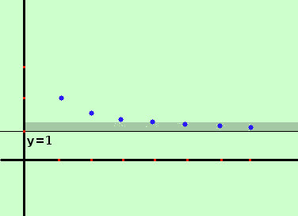
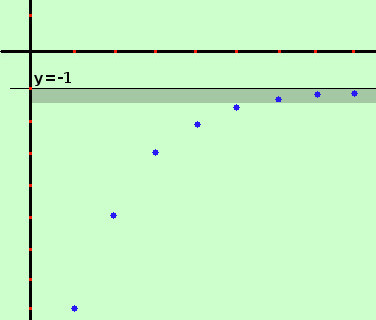
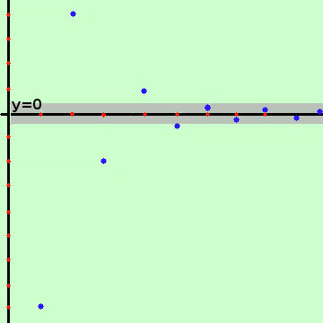

tipi di successioni a limite finito
Per capirci meglio nei grafici delle successioni introduciamo il concetto di asintoto orizzontale come retta orizzontale cui si avvicinano sempre piu' i termini della successione senza mai toccarla;
Per ogni esempio abbiamo varie possibilita': il limite a puo' essere positivo, negativo o nullo: l'asintoto orizzontale y = a sara' sopra, sotto oppure coincidera' con l'asse delle x: per avere ogni possibilita' bastera' alzare od abbassare la figura rispetto all'orizzontale
Distinguiamo i casi
- Successione decrescente con limite finito

Esempio: consideriamo
| 2 |
, |
3

2 |
, |
4
3 |
, |
5
4 |
, ........ |
n+1
n |
, ..... |
Essa ha come limite il valore 1: i suoi termini si avvicinano al valore 1 decrescendo
Da un certo momento in poi tutti i termini della successione sono contenuti nella striscia colorata (intorno superiore di 1 che posso restringere quanto voglio), quindi posso scrivere
| limk→∞ |
k+1
k |
= 1 |
- Successione crescente con limite finito

Esempio: consideriamo
| -9, -5, -3, -2 |
, - |
3
2 |
, - |
5
4 |
, - |
7
8 |
, ........ |
-(½)k-4-1
|
, ..... |
Essa ha come limite il valore -1: i suoi termini si avvicinano al valore -1 decrescendo
Da un certo momento in poi tutti i termini della successione sono contenuti nella striscia colorata (intorno inferiore di -1 che posso restringere quanto voglio), quindi posso scrivere
- Successione oscillante a limite finito

Esempio: prendiamo la successione gia' considerata
-8, +4, -2, +1, -½, +¼.... (-½)n-4, .....
Essa ha come limite il valore 0:
i suoi termini si avvicinano al valore 0 sia dall'alto che dal basso (oscillando)
Da un certo momento in poi tutti i termini della successione sono contenuti nella striscia colorata (intorno completo di 0 che posso restringere quanto voglio), quindi posso scrivere
limk→∞ (-½)k-4 = 0
|